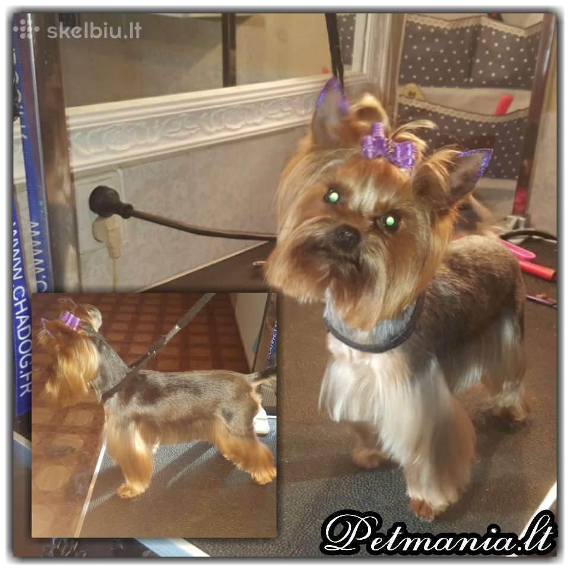

Šunų kirpykla Šiauliuose - Tagiras
 Skip to content Tagiras Apie mus Naujienos Paslaugos Galerija Vaizdo galerija KontaktaiSveiki atvykę į
Šuniukų kirpyklą Tagiras
Sveiki atvykę į
Šuniukų kirpyklą Tagiras
Apie Šunų kirpyklą "Tagiras"
Tagiras šuniukų kirpykla, tai vieta, kur Jūsų augintiniu pasirūpins patirtį turintys kirpėjai. Mūsų tikslas yra ne tik sukurti nepriekaištingą gyvūno išvaizdą, bet ir jaukią bei draugišką atmosferą, kur Jūsų keturkojis draugas jaustųsi laimingas bei ramus. Paslaugos atliekamos naudojant „Iv San Bernard“ (Italija) ir „Plush Puppy„ (Australija) kosmetiką.
Daugiau informacijosATLIEKAMOS PASLAUGOS
Stilingas kirpimas
Kosmetinis kirpimas
Kirpimas mašinėle
Trimingavimas
Maudymas
Poplaukio iššukavimas
Akių, ausų valymas
Nagu karpymas
kainos
Mažos veislės šunys: 16-25 €
Didelės veislės šunys: 25-70 €
Ornamentinis išskutimas: 3-5 €
Blizgios tatuiruotės, auskarai: 4-10 €
Naujienos
„Tagiras“ ir „Underlook“ kviečia dalyvauti nemokamoje išskirtinėje augintinių fotosesijoje
O kaip Tavo augintinis atrodo iš apačios? Šunų kirpykla „Tagiras“ ir „Underlook“ kviečia dalyvauti nemokamoje išskirtinėje augintinių fotosesijoje ant stiklo iš apačios! Kovo 28-29 dienomis, šunų kirpykloje „Tagiras“ (Dvaro g. 49). Paskubėk, vietų skaičius ribotas. Dalyvauk konkurse Facebook’e ir laimėk Standartinį pasiūlymą DOVANŲ!
???PAS MUS JAU KVEPIA ŠV. KALĖDOM !!!????
Šuniukų kirpykla “Tagiras” Šv. Kalėdų progą iki pat 2019 m. vasario mėn. Jūsų augintinį nemokamai papuoš kalėdiniu kaspinėliu bei Jums pageidavus išskutinės pasirinktą raštą ir visa tai DOVANA JUMS, Mielieji! Net ir nedidelė dovanėlė suteikia šiltą kalėdinę nuotaiką, bei stilingą šuniuko šukuosena prieš didžiąsias metų šventes
Šuniukų kirpykla “TAGIRAS” nuo rugsėjo 24d. iki spalio 5d. NEDIRBS
Mieli klientai, norime Jus informuoti, jog šuniukų kirpykla “TAGIRAS” nuo rugsėjo 24d. iki spalio 5d. NEDIRBS. Registracija telefonu 864748977 🙂 Gražios dienos, Mielieji 🙂
Daugiau naujienųkontaktai
Šuniukų kirpykla Tagiras
Dvaro g. 49, Šiauliai,
Tel. (8 41) 42 73 77
Mob. telefonas +370 647 48977
El. paštas tagiras49@gmail.com
Naujausi įrašai
„Tagiras“ ir „Underlook“ kviečia dalyvauti nemokamoje išskirtinėje augintinių fotosesijoje ???PAS MUS JAU KVEPIA ŠV. KALĖDOM !!!???? Šuniukų kirpykla “TAGIRAS” nuo rugsėjo 24d. iki spalio 5d. NEDIRBSPuslapiai
Apie mus Galerija Kontaktai Naujienos Paslaugos Tagiras Vaizdo galerija APIE MUS
Šuniukų kirpykla Tagiras
Dvaro g. 49, Šiauliai,
Mob. telefonas +370 647 48977
Tel. (8 41) 42 73 77
El. paštas tagiras49@gmail.com